化学是一门以实验为基础的学科，但中学阶段普遍面临三重困境：实验条件不足——县域中学难以配齐通风橱、精密仪器与安全防护；抽象概念难懂——原子结构、元素周期律、化学键等微观内容仅靠课本插图难以建立空间想象；危险实验不敢做——钠与水反应、氢气爆鸣等经典实验因安全顾虑被大量跳过。
《元素幻语》以浏览器为载体，把 3D 可视化、手势交互与大模型 Agent 结合，构建一个「可看、可玩、可问、可练」的沉浸式化学学习环境，让没有实验室的学校也能完成高质量的科学启蒙。
本项目不是单一功能的演示页，而是一个由 10 个功能模块组成的学习闭环：
| 亮点 | 说明 |
|---|---|
| AI 化学助教 Agent | 不是简单调用大模型接口，而是具备 6 个化学工具调用能力的智能体，能查元素、算摩尔质量、配平方程式、检索反应、查危化品安全、检索知识库 |
| 多模态视觉理解 | 拍照上传化学方程式，视觉模型识别后自动调用配平工具校验，视觉与计算互相印证 |
| 隔空手势操控 | 基于 MediaPipe + TensorFlow.js 在浏览器端实时识别手部关键点，用手势旋转、缩放 3D 化学方程式词云 |
| 3D 虚拟实验室 | 按真实科研实验室标准构建四大功能分区、72 项器材试剂，支持拖拽操作与反应模拟，并配套完整安全规范体系 |
| AI 安全护栏 | 在调用模型前拦截危险化学请求，是化学这一高风险主题下最必要的合规设计 |
| 可对话的场景化 AI | 首屏 AI 模式、可对话的 3D 元素周期表（元素点击 + 四组探索预设高亮）、化学先驱角色 Agent、文档问答轻量 RAG 四条路径共用同一套 Agent 与可解释引用链路 |
| 弱网与不可用降级 | 首屏视频按网络与设备能力降级为静态背景；WebGL / Three.js 不可用时自动切换为可交互 2D 周期表，AI 问答与元素详情不受影响 |
| 用户 | 典型痛点 | 对应方案 |
|---|---|---|
| 初中生 | 刚接触化学，元素符号与方程式记不住，缺乏直观感受 | 3D 元素周期表、元素 2048、原子构建游戏 |
| 高中生 | 方程式配平易错，实验现象记不牢，遇到难题没人即时答疑 | 方程式词云、拖拽填空挑战、AI 助教工具调用 |
| 教师 | 危险实验无法演示，缺少可交互的课堂素材 | 3D 虚拟实验室、化学史诗时间线、手势演示 |
| 自学者 | 学习路径散乱，缺少体系化的知识图鉴 | 元素图鉴（118 篇科普文本）+ RAG 知识检索 |
| 模块 | 类型 | 主要能力 |
|---|---|---|
| 主页入口 | 门户 | 视频背景、粒子画布、唱片播放器、模块导航、AI 助手入口 |
| 动态元素周期表 | 3D 可视化 | 2D / 3D 双视图、118 元素立体排布与旋转缩放、点击查看详情与元素图鉴、维基百科拓展、移动端横屏整表展示 |
| 化学方程式词云 | 3D + 手势 | 3D 词云、手势控制、相机视角切换 |
| 方程式拖拽填空 | 练习 | 随机题目、拖拽气泡填空、计分 |
| 3D 化学实验室 | 仿真 | 四大分区、72 项器材试剂、拖拽取用、反应模拟、安全规范 |
| 化学杀 | 卡牌对战 | 手牌组合成物质、酸碱 / 沉淀伤害判定、回合制 AI 对手 |
| 化学史诗 | 科普 | 化学史时间线与人物故事 |
| 元素 2048 / 原子游戏 | 游戏化 | 元素合成、原子结构搭建 |
| AI 化学助教 | Agent | 工具调用问答、流式输出、语音朗读、拍照识别 |
AI 对话的完整链路如下，代理层对流式响应做逐块透传，避免缓冲导致首字延迟：
浏览器 (4100)
│ POST /api/aigent/chat/stream
▼
web_host.py ── 反向代理，SSE 逐块透传 ──▶ backend_server.py (4101)
│
┌─────────────────┴──────────────────┐
▼ ▼
安全护栏（前置拦截） Agent 工具循环
命中则直接返回 最多 4 轮 Function Calling
│ │
└─────────────────┬──────────────────┘
▼
DeepSeek API
│
▼
SSE: status → tool → delta → done
元素详情中的维基百科内容同样走服务端代理：浏览器请求同源 /api/wiki/summary，由 web_host 转发到 backend_server，再由服务器访问 zh.wikipedia.org，摘要缓存 10 分钟；配图通过 /api/wiki/image 二次代理。这样即使客户端网络无法直连维基，也能正常显示摘要与图片。
元素幻语/ ├── 主页.html # 站点入口（结构 + 模块导航） ├── pages/ # 功能模块 │ ├── Periodic_Table/ # 周期表（2D/3D 页面 + Flask 数据接口 + 118 篇元素图鉴） │ ├── Chemical_equation/ # 方程式词云 + 拖拽填空 + vendor │ ├── chemistry_lab/ # 3D 虚拟实验室 │ ├── chemistry_kill/ # 化学杀（独立 css / js 卡牌对战） │ ├── Chemical_Epics/ # 化学史诗 │ └── games/ # 元素 2048 / 原子游戏 ├── server/ # 后端服务 │ ├── start_bs.py # 本地一键启动（4100 + 4101，含自签 HTTPS） │ ├── start_prod.py # 生产启动入口（容器内，TLS 交由 Nginx） │ ├── web_host.py # 静态托管 + API 反向代理 │ ├── backend_server.py # API 路由（对话 / 视觉 / TTS / 维基代理） │ ├── aigent_service.py # Agent 循环 / SSE / TTS 封装 │ ├── chem_tools.py # 6 个化学工具 │ ├── vision_service.py # 多模态视觉识别 │ ├── rag_engine.py # BM25 + LSA 向量 + RRF 混合检索 │ ├── build_index.py # 构建本地检索索引（落盘） │ ├── mcp_server.py # MCP 工具服务（6 工具 + 3 资源） │ ├── eval_agent.py # AI 效果评测（25 题） │ ├── eval_rag.py # RAG 检索评测（15 题，含消融） │ ├── benchmark.py # 性能基准 │ └── prompt_templates.json # 提示词模板 ├── assets/ # 共享资源 │ ├── css/（12 个） # 各页面样式，与页面同名 │ ├── js/（11 个） # 各页面脚本，与页面同名 │ ├── character/ # 元素角色图 │ ├── photo_up/ photo_down/ # 元素图鉴图片 │ ├── vendor/ # 本地化的第三方库 │ ├── background.mp4 # 全局背景视频（Git LFS） │ └── 无人之地.mp3 # 背景音乐 ├── tests/ # 122 个离线单元测试 ├── docs/ # 技术文档与评测报告 │ ├── 技术文档.html/docx/pdf │ ├── AI评测报告.md / RAG评测报告.md / 性能测量报告.md │ ├── 演示视频脚本.md / 元素幻语_演示视频.mp4 │ └── tools/html2docx.py # HTML → Word 文档构建工具 ├── AIgent/ # 桌面宠物子项目 ├── Dockerfile # 生产镜像（python:3.12-slim） ├── .env.example # 环境变量模板 ├── requirements.txt # pip 依赖清单 ├── pyproject.toml / uv.lock # uv 工程配置 └── README.md
| 层面 | 选型 | 理由 |
|---|---|---|
| 前端框架 | Vue 3（主页外壳）+ 原生 HTML/CSS/JS | Vue 3 负责导航、AI 助手面板与对话状态管理，3D 场景保持原生渲染；本地引入 UMD 构建、无打包链，可静态部署，也支持双击 HTML 直接打开 |
| 3D 渲染 | Three.js | 成熟的 WebGL 封装，支持 CSS3D 标签与后处理，满足词云与实验室场景 |
| 手势识别 | MediaPipe Hands + TF.js | 浏览器端推理，不上传视频，隐私友好；支持 CPU 回退保证兼容性 |
| 后端 | Python Flask | 轻量、易读，两个服务职责分离（静态托管 / API） |
| 大模型 | DeepSeek Chat | 中文表达自然、支持 Function Calling、成本可控 |
| 视觉模型 | Qwen3-VL | 中文场景 OCR 与图像理解表现好，兼容 OpenAI 协议便于集成 |
| 知识检索 | 自研混合 RAG | BM25 + LSA 向量 + RRF，全本地计算，零额度、可离线、结果可复现 |
大模型擅长理解意图和组织语言，但在精确计算上并不可靠。化学场景中，摩尔质量、方程式配平、元素常数容不得近似——一旦模型「大概记得」一个错误数值，学生就会记住这个错误。
因此本项目采用 Agent + 工具 架构：模型不直接回答可计算的问题，而是先调用本地工具拿到确定结果，再基于结果组织语言。这样既保留了自然语言交互的流畅性，又保证了科学内容的准确性。
通过 DeepSeek 的 Function Calling 能力注册 6 个工具，模型以 tool_choice: auto 自主决定是否调用、调用哪个，最多支持 4 轮工具链（例如先查元素、再算摩尔质量）。
| 工具 | 能力 | 实现要点 |
|---|---|---|
query_element | 按符号 / 中文名 / 英文名查询元素性质 | 加载 118 元素周期表数据，建立符号、中英文名三套索引，支持「氢元素」这类模糊匹配 |
molar_mass | 计算摩尔质量 | 自研化学式解析器，递归处理括号分组，支持结晶水（CuSO₄·5H₂O） |
balance_equation | 配平化学方程式 | 用 Fraction 分数做高斯消元，避免浮点误差；最后求最大公约数归一化为最小整数比 |
lookup_reaction | 查询反应类型与现象 | 试剂别名映射（「盐酸」→ HCl），排序后匹配反应键，未命中时明确告知不臆测 |
get_safety_info | 危化品危险性 / 防护 / 急救 | 12 种常见危化品结构化安全库，含急救措施 |
search_knowledge | 元素知识检索（RAG） | 见 4.3 节 |
配平本质是求解线性方程组。以 Fe + O2 = Fe2O3 为例，设系数为 x₁…x₄，由铁、氧原子守恒得到两组方程，构造矩阵后做分数高斯消元，最后把解归一化为最小正整数：
Fe: 1·x₁ + 0·x₂ − 2·x₃ = 0 O : 0·x₁ + 2·x₂ − 3·x₃ = 0 高斯消元（Fraction 精确运算）→ x₁=4, x₂=3, x₃=2 结果: 4 Fe + 3 O2 = 2 Fe2O3
使用分数而非浮点，是为了彻底避免 0.3333… 之类的精度误差导致系数判断失败——这是很多同类实现在复杂方程式上出错的根源。
项目本身就包含 118 篇元素科普文本（与 3D 元素周期表同源）。将这些文本按句切分为 1213 个知识块，构建全本地混合检索：
| 通道 | 实现 | 擅长的场景 |
|---|---|---|
| BM25 稀疏检索 | 词频 + 文档长度归一化 + IDF，中文按二元组切词 | 元素名、术语等关键词精确命中 |
| LSA 向量检索 | 字符 1-2gram TF-IDF → 截断 SVD 降到 256 维 → 余弦相似度 | 语义相近但用词不同的表达 |
| 二元组重叠 | 查询与知识块的字符二元组交集计数 | 短查询与文档用词错位时的兜底召回 |
三路结果用 RRF 融合：score = Σ 1/(60 + rank)。选择按排名而非按分数融合，是因为 BM25 分数无上界、余弦相似度落在 0–1 之间，直接加权必然被量纲大的通道主导。
融合之后还有两层领域规则，这是评测驱动出来的设计：
索引全部在本机计算，不调用任何嵌入接口：一次构建落盘约 29 MB，单次查询约 40 毫秒，无额度限制、可离线、结果可复现。返回 Top-3 片段并标注来源（如「据元素图鉴·氢」）。
网页端 AI 面板内置拍照入口，上传图片后由 qwen3-vl-plus 识别，并按类型分流处理：
| 识别类型 | 后续处理 |
|---|---|
| 化学方程式 | 提取表达式 → 自动调用配平工具校验 → 返回「识别原文 + 配平结果」 |
| 实验装置 | 识别装置名称 → 自动查询安全库，附防护要求 |
| 试剂 / 元素 | 识别名称 → 自动补充危化品信息 |
| 其他 / 模糊 | 返回低置信度提示，引导重拍 |
关键设计在于视觉与计算互相印证：模型识别出手写方程式后，配平工具独立计算一遍，若结果与原式不同则提示未配平。这解决了纯 OCR 方案「抄错还讲错」的问题。
Fe + O2 = Fe2O3 的图片，4.4 秒返回——识别为 equation，置信度 high，自动配平得 4 Fe + 3 O2 = 2 Fe2O3，并给出「原式未配平，需调整系数使原子守恒」的讲解。
化学是高风险主题，模型若被引导输出制毒、爆炸物、化学武器相关内容，后果严重。本项目在调用模型之前做三层防护：
| 优化点 | 实现 |
|---|---|
| SSE 事件流 | 后端产出 status → tool → tool_result → delta → done 五类事件，前端逐帧解析渲染 |
| 思考过程可见 | 「正在理解你的问题」「正在调用工具」状态实时展示，降低等待焦虑 |
| 工具调用可视化 | 每次调用渲染独立卡片，展示工具名与入参；调用前状态提示会写成「正在查询「镓」的熔点…」，让 AI 的决策过程可读 |
| 代理层透传 | web_host 对流式响应逐块转发，关闭缓冲，避免首字延迟 |
| 语音双通道 | 回答分句入队，边生成边请求 TTS 并自动朗读，形成「看 + 听」 |
| 错误边界 | 网络失败、流中断、模型异常均降级为友好提示，并提供「重新试一次」按钮，不白屏 |
六个化学工具不只服务于本项目，还按 MCP（Model Context Protocol）标准对外暴露。任何支持该协议的客户端——Claude Desktop、Cursor 或自研 Agent——都能直接调用，无需了解本项目的内部实现。
| 类型 | 名称 | 说明 |
|---|---|---|
| Tool | query_element / molar_mass / balance_equation | 元素查询、摩尔质量、方程式配平 |
| Tool | lookup_reaction / get_safety_info / search_knowledge | 反应检索、危化品安全、知识检索 |
| Resource | chem://element/{symbol} | 单个元素的结构化资料 |
| Resource | chem://catalog/elements | 全量元素清单（118 项） |
| Resource | chem://catalog/reactions | 内置反应库清单 |
基于 MCP 2.x 的 MCPServer 实现，同时支持 stdio（供桌面客户端以子进程接入）与 streamable-http（供局域网应用调用）两种传输方式。评委只需在 Claude Desktop 配置文件中加入三行，即可现场验证工具能力，不必进入网页。
balance_equation 返回 4 Fe + 3 O2 = 2 Fe2O3，调用 molar_mass 返回 74.092，读取 chem://element/H 返回氢的完整资料，协议链路完整。
Agent 能力如果只停留在代码里，用户与评委都难以判断一条回答来自「模型记忆」还是「确定性工具 / 知识库」。因此前端把内部决策过程完整外化为四类界面元素：工具轨迹、知识来源卡片、出处弹窗、降级与重试提示。以下截图均来自本地运行实例的真实交互。
当模型决定调用工具时，面板先出现「正在查询「镓」的熔点、密度等性质…」的状态提示，随后落地为工具卡片，显示工具名与本次入参（「镓 Ga，相对原子质量 69.7231」）。用户能清楚看到这一轮回答依据的是哪一次确定性计算，而不是模型「随口一说」。
涉及史实或元素性质的知识型回答，正文下方会附「📎 知识来源」卡片，每条标注来源名与知识库编号（如 kb://element/氙）。点击条目弹出「查看依据」，展示命中方式（bigram+bm25+vector）、RRF 融合得分与原文片段，读者可逐条核对后再采信。
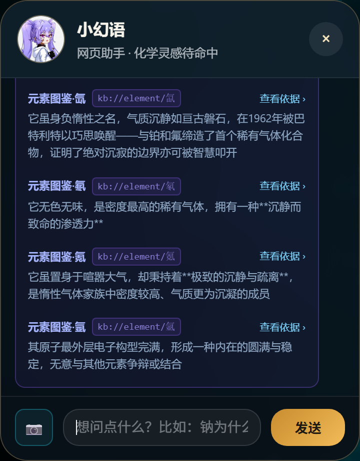
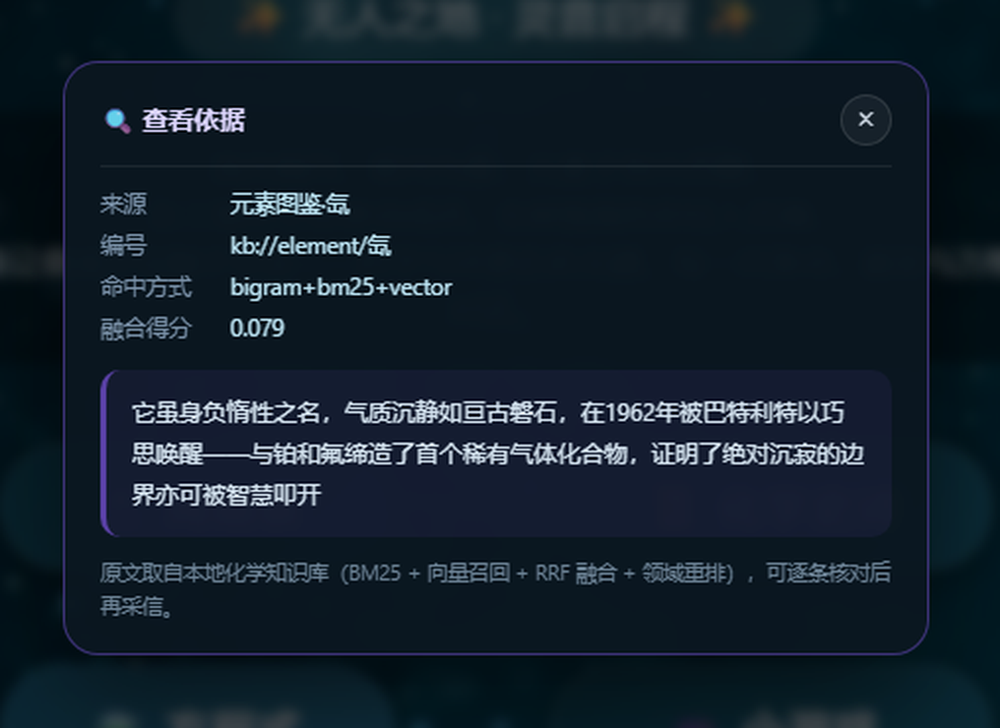
如果本轮检索没有命中任何知识块，界面不会假装有依据，而是明确标注「系统建议：本条回答未检索到知识库原文，属于模型的通识推断，建议结合教材手动核对」，把「哪些是查到的、哪些是推测的」直接摊开给用户。
上游模型不可用时，后端按「主模型 → 备用模型 → 本地兜底话术」逐级降级，并把实际链路随 done 事件下发（如「文本模型：主模型与备用模型均不可用 → 已切换到本地兜底话术」），前端以黄色提示条呈现。若请求在传输层就失败（断网、服务未启动），则显示红色错误卡并提供「重新试一次」按钮——点击后原问题自动重发，用户无需重新输入。
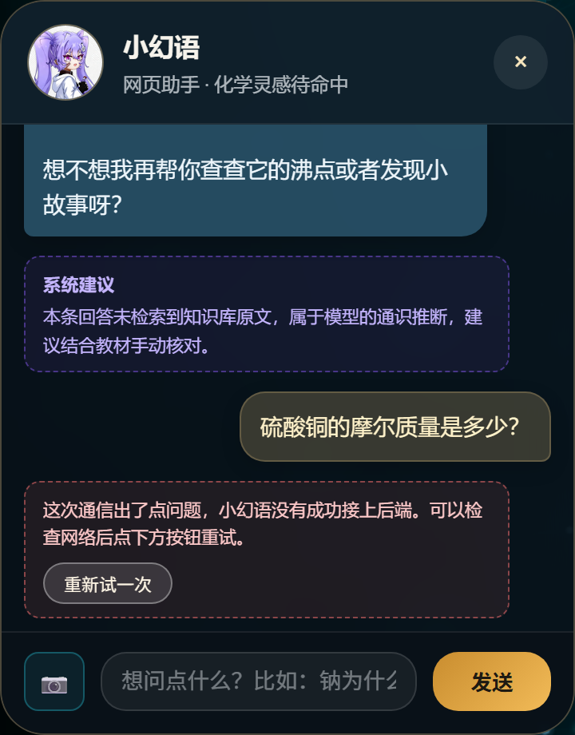
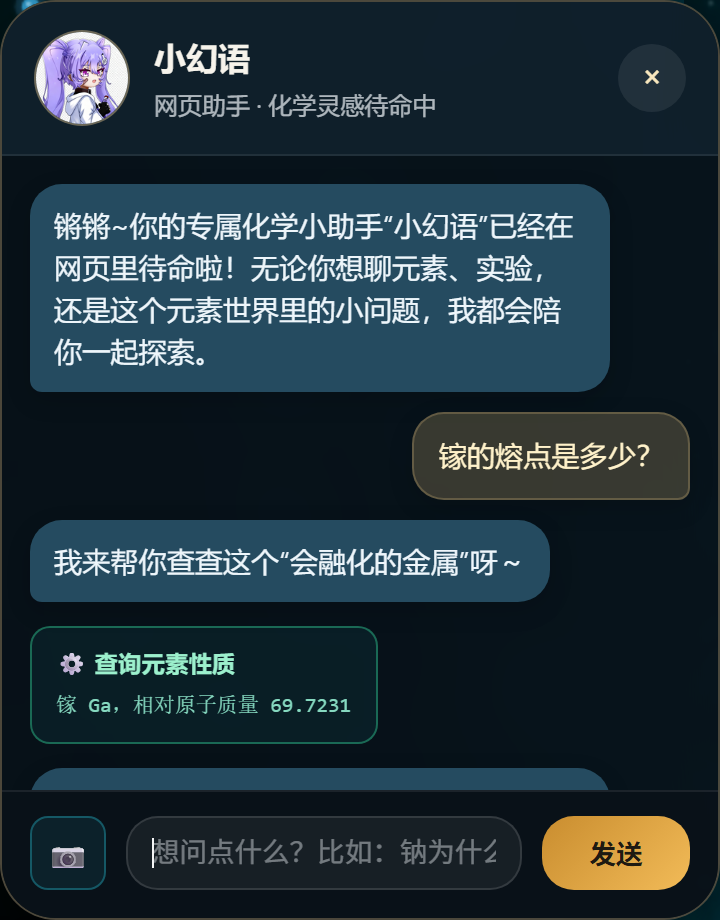
如果 AI 只存在于右下角的聊天框，网站本质上仍是「可浏览的展品」。本轮改造把 AI 下沉到三个真实场景：首屏 AI 模式、可对话的 3D 元素周期表、化学先驱角色 Agent，并补上文档问答这一轻量 RAG 场景；同时按赛项「界面不要求炫酷、要求稳」的要求加固加载与降级策略。以下截图均来自本地运行实例。
首屏导航上方新增「🤖 AI 模式」入口，点击直接展开小幻语面板并聚焦输入框。面板空态给出三条可点击的示例问题（常温液态元素、钠与水反应、硫酸铜与氢氧化钠反应），点击即进入完整 Agent 链路：工具调用 → 知识库检索 → 流式回答 → 知识来源卡片。空态、加载态（三点等待）、错误态与重试入口均为独立界面状态，不会出现「打开后一片空白」。
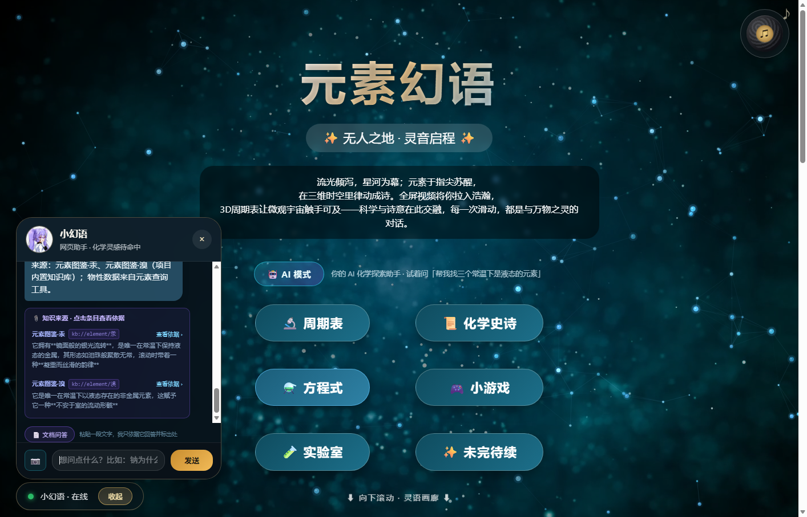
kb://element/汞 等出处周期表页面在捕获阶段监听元素格点击：读取 data-number 与元素符号后，右下角展开 AI 面板并自动带入「当前元素」上下文，快捷问题覆盖「在生活中有哪些应用」「发现历史有什么故事」「熔点沸点是多少」，每条提问都要求先检索知识库并标注来源。这样，118 个静态方块变成了 118 个可对话的知识对象。
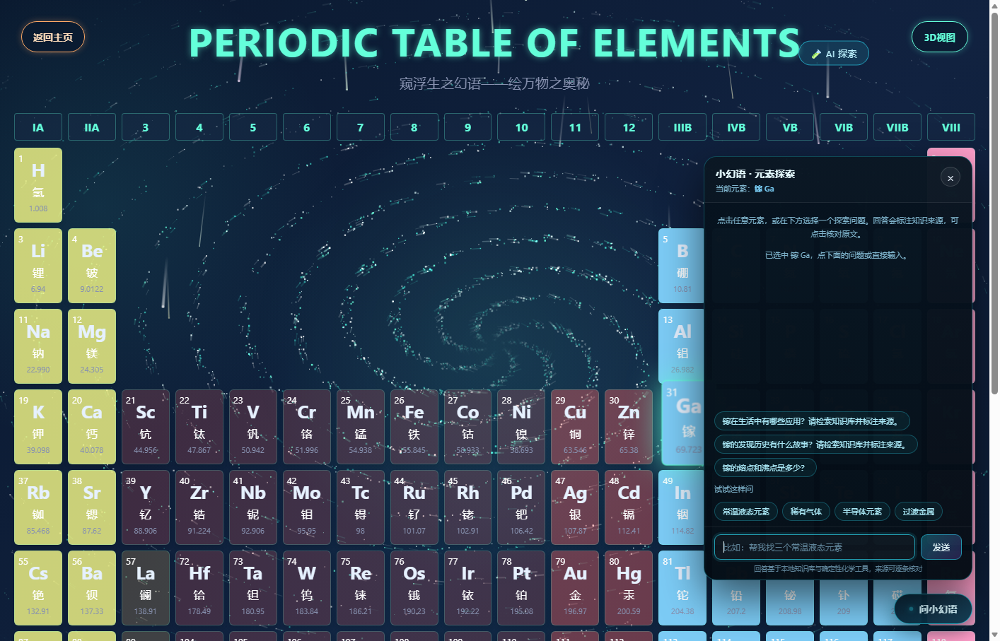
页面另设「🧪 AI 探索」与四组探索预设（常温液态元素、稀有气体、半导体元素、过渡金属）。选择预设后，JS 先按符号给 2D / 3D 两套表格打上高亮标记，再自动发起提问——例如「帮我找三个常温下是液态的元素」会高亮 Hg 与 Br，并生成共同用途的解释。用户看到的不再是「浏览周期表」，而是「AI 驱动周期表回答问题」。
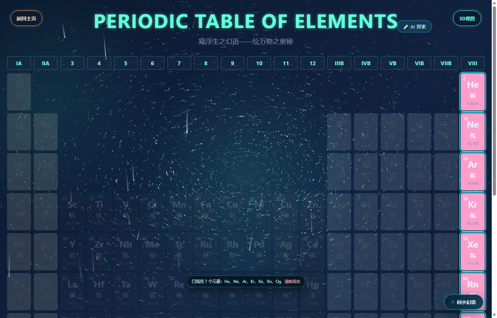
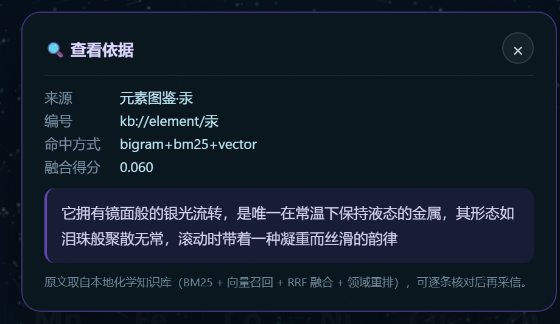
灵语画廊的每张人物卡新增「💬 与 XX 对话」按钮。点击后进入角色模式：面板标题切换为该科学家，副标题标注「历史人物访谈 · 第一人称对话」，并显示「🎭 角色模式」提示。前端在流式请求中携带 role 字段，后端据此追加「历史人物访谈模式」系统提示词——要求第一人称、以亲历者视角讲述、不自称 AI、不拒绝设定、不确定的年代与数据不编造。相比只在用户消息里写一句「请扮演」，把角色约束放进系统提示词能稳定得到第一人称回答。门捷列夫、拉瓦锡、戴维、舍勒、居里夫人五位先驱均可直接对话，把传记页从「阅读材料」升级为「可访谈的角色」。
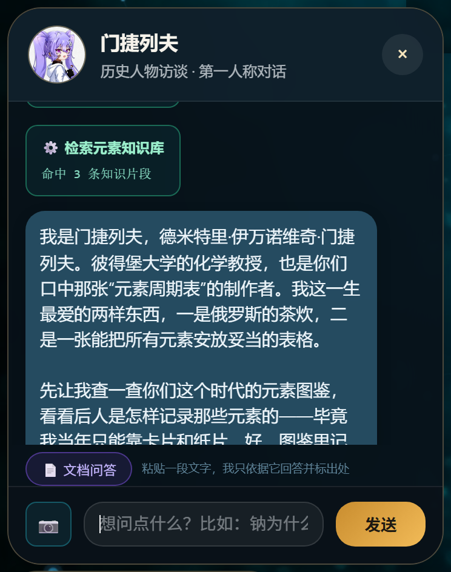
面板增加「📄 文档问答」：可粘贴文本或上传 .txt / .md（≤200KB，超出截断至 8000 字）。前端按段落与句末标点切块（累计约 170 字成块，最多 40 块），以字符 bigram 与单字命中打分取 Top 3，作为「用户提供的资料」注入提示词，并要求模型只依据资料回答、引用处标注 [1][2]、资料未覆盖处明确写「资料未提及」。回答下方给出「本地文档 · 第 N 段」来源卡片，点开即可看到原文片段——这正是获奖作品中「RAG 原文溯源」的加分项。
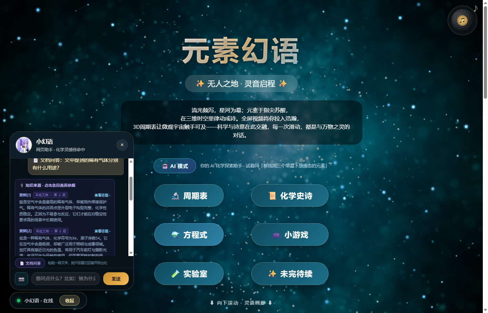
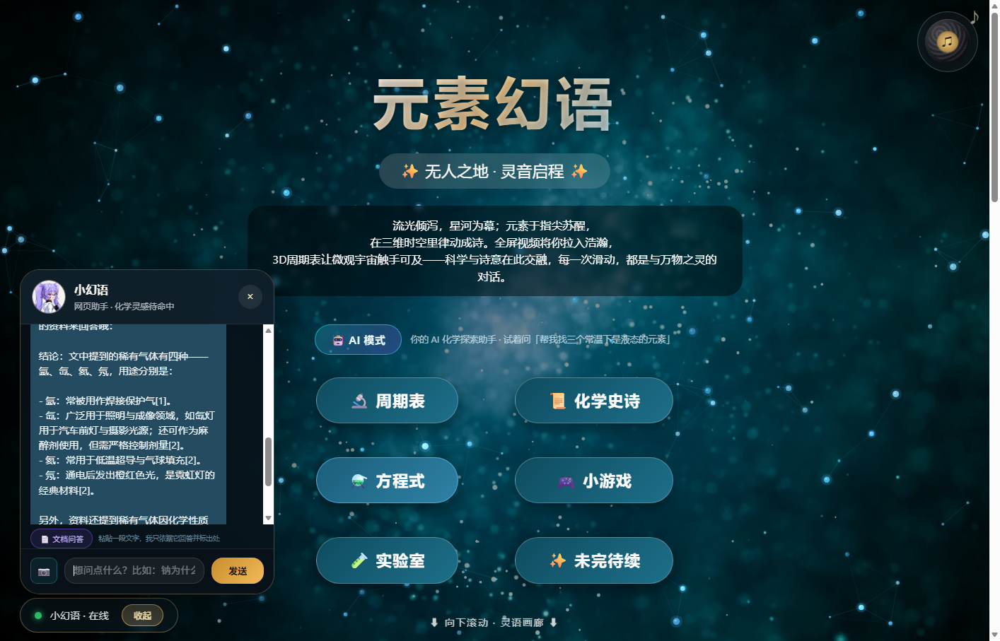
首屏视频默认 opacity:0，在 playing 事件后才淡入（0.8s）；检测到 Save-Data、2G/3G 网络、移动端窄屏、prefers-reduced-motion，或 6 秒内仍未就绪时，直接移除视频源并切换为渐变静态背景，保证首屏 1 秒内可读、可点。3D 周期表启动前检测 WebGL 与 Three.js：任一不可用即给 body 加 pt-no-webgl，隐藏 3D 容器、显示说明横幅、把视图切换按钮置为「3D 不可用」，并保留完整可交互的 2D 周期表；若 12 秒内元素数据仍未加载成功，同样回落到 2D 并提示网络原因。
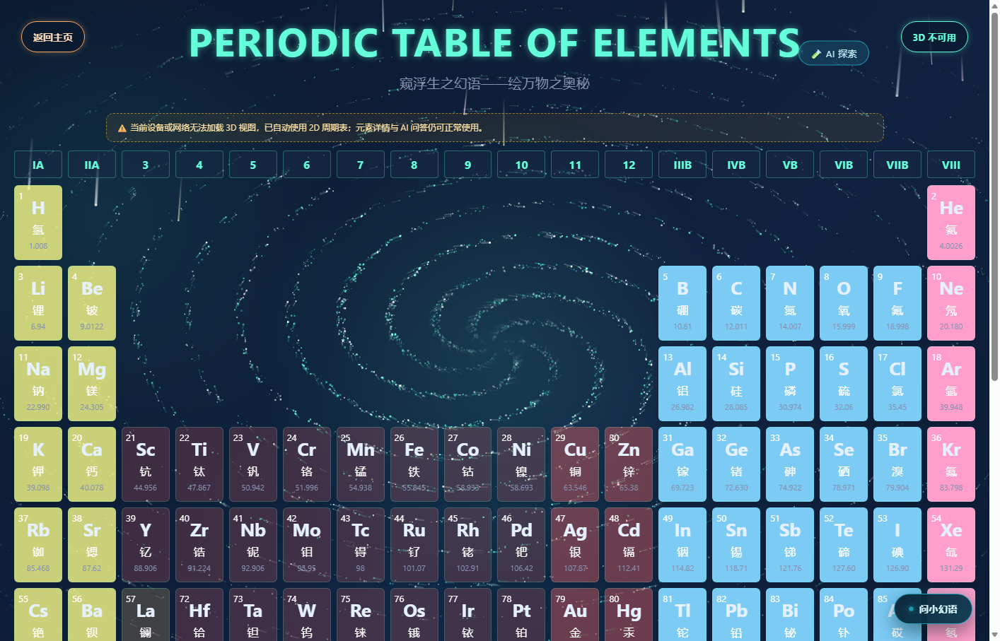
大量化学方程式以 3D 词云形式悬浮于空间，用户无需接触屏幕即可操控。
file:// 环境下也能运行按真实科研实验室标准构建，而非简单的物品堆砌：
| 功能分区 | 配置数量 | 内容 |
|---|---|---|
| 试剂存储区 | 30 | 19 种液体试剂 + 11 种固体试剂，标注规格与浓度 |
| 实验操作区 | 29 | 玻璃器皿、加热支撑、取用工具（蒸发皿、坩埚、漏斗、坩埚钳等） |
| 仪器分析区 | 7 | pH 计、分光光度计、电子天平、滴定管等（固定安装，不可拖拽） |
| 清洁与处置区 | 7 | 洗瓶、晾干架 + 废液缸、废固桶、锐器盒 |
规则与器材的闭环：规范不是写在文档里的死条文，而是能在场景中被执行——把装有试剂的容器拖入废液缸，系统按成分自动判定分类（含重金属 / 酸性 / 碱性），给出对应处置要求；拖拽精密仪器会被拦截并提示「固定安装，请到仪器前操作」。
安全体系：首次进入的安全须知弹窗、21 种试剂的 GHS 风格危险标识、18 个反应的安全提示、五大模块规范面板（安全操作、流程管控、废弃物处理、应急处置、人员准入）。
异常操作演示：除「正确路径」外，场景还内置了三类错误操作的后果演示——把水倒入浓硫酸（暴沸飞溅）、高锰酸钾与乙醇混放（剧烈氧化）、高锰酸钾与盐酸混合（释放氯气）。命中后不执行正常反应流程，而是触发红色警示条、容器红色脉冲、浑浊烟雾与分步处置说明。稀释硫酸的判断还区分了顺序：先加水再缓慢注酸会走「正确稀释」分支，只有酸在前、水在后才判定为异常——这一点与真实实验规范一致，而不是简单的两者一混就报警。
| 模块 | 技术要点 |
|---|---|
| 动态元素周期表 | 2D / 3D 双视图，118 元素立体排布，点击弹出详情并可按需展开晶胞结构与电子排布；配套 118 篇元素图鉴文本，详情页接入服务端维基百科代理 |
| 化学杀 | 独立卡牌对战页面：手牌组合为物质后结算酸碱 / 沉淀伤害，回合制 AI 对手，支持移动端横竖屏布局 |
| 方程式拖拽填空 | 随机出题、气泡拖拽、即时判分与反馈 |
| 元素 2048 | 元素合成玩法，按原子序数递进 |
| 化学史诗 | 时间线叙事，串联化学史关键人物与发现 |
| 主页 | 视频背景、粒子画布、黑胶唱片播放器、响应式布局 |
项目初期各页面为单文件巨型 HTML，维护困难。已完成一次系统性重构：
每个页面的样式与脚本导出为同名文件（如 lab.html → lab.css + lab.js），从文件名即可定位归属。CSS 迁移后统一修正了 url() 的相对路径基准，避免背景图失效。
按职责划分 pages/（功能模块）、server/（后端服务）、assets/（共享资源）、tests/（单元测试）、docs/（文档与构建工具），修复了重构带来的 26 处跨目录引用。
.env 已加入 .gitignore，仓库仅保留 .env.example 占位模板。
配置加载采用零依赖实现：从项目根读取 .env，仅补充未设置的环境变量，不覆盖外部注入值——既支持本地开发，也兼容容器化部署。
requirements.txt 声明 pip 依赖（flask、flask-cors、requests、websockets、mcp、numpy、scikit-learn、joblib）pyproject.toml 与 uv.lock，支持 uv sync 一键复现环境.venv，与系统 Python 隔离.gitignore 排除密钥、证书、缓存、构建产物与归档目录| 问题 | 处理 | 效果 |
|---|---|---|
| 冗余视频 | 删除一个 132MB 未被引用的视频 | 仓库瘦身 |
| 超大视频 | 4 部超 100MB 纪录片排除出仓库并降级为海报图 | 满足托管平台单文件限制 |
| 可再生产物 | 归档 92MB 构建中间产物 | 减少版本噪音 |
| 图片上传 | 前端 Canvas 压缩至最长边 1024px / JPEG 0.82 | 上传体积降至数十 KB |
六个化学工具与安全规则全部实现为纯函数，具备天然的可测性。项目建立了 122 个用例的单元测试，全部离线运行、不依赖网络与 API 密钥。
| 测试文件 | 覆盖内容 | 用例数 |
|---|---|---|
test_chem_tools.py | 元素查询、摩尔质量（含结晶水与嵌套括号）、方程式配平、反应检索、安全查询、知识检索、工具分发 | 47 |
test_safety.py | 危险请求拦截（11 例正样本）+ 正常学术提问不误杀（10 例负样本） | 24 |
test_ai_modules.py | 评测模块的文本归一化与关键词判定、视觉服务 JSON 解析容错、MCP 工具注册 | 24 |
test_rag.py | 分词、语料切分、向量索引拟合与持久化、BM25 与混合检索、概念扩展、来源多样性 | 27 |
持续集成配置于 .github/workflows/ci.yml，包含两个任务：单元测试（Python 3.12 环境跑 pytest 并校验服务端语法）与代码规范（Ruff 检查未定义变量、未使用导入、import 排序）。静态检查当前为 0 告警。
| 测试项 | 方法 | 结果 |
|---|---|---|
| 服务启动与健康检查 | 接口请求 | 4100 主页 200；4101 /api/health 返回 {"ok":true}；代理链路正常 |
| 元素查询工具 | 真实对话 | 提问「氢的相对原子质量」→ 触发 query_element，返回 1.008 |
| 方程式配平工具 | 真实对话 | 「配平 Fe + O2 = Fe2O3」→ 触发工具，返回 4 Fe + 3 O2 = 2 Fe2O3 |
| 摩尔质量计算 | 单元测试 | H₂O=18.015、Ca(OH)₂=74.092、CuSO₄·5H₂O=249.677，均正确 |
| 安全护栏 | 接口测试 | 输入危险请求 → blocked: true，返回安全教育话术，未产生模型调用 |
| SSE 流式输出 | 接口测试 | 单次回答产出 405~612 行事件，含 status / tool / delta / done |
| 多模态识别 | 图片上传 | 4.4 秒识别方程式并自动配平，置信度 high |
| 前端面板 | 浏览器实测 | 面板展开、工具卡片渲染、流式文字、安全警示样式均正常，控制台无报错 |
AI 应用最容易被追问的问题是「你怎么知道它答得对」。为此项目内置了一套可复现的评测集：用 25 道覆盖六个工具能力的固定题目驱动真实 Agent，量化统计工具调用与答案准确性。
| 指标 | 结果 | 说明 |
|---|---|---|
| 工具调用准确率 | 100%（25/25） | 该调工具时是否调用了正确的工具 |
| 答案准确率 | 100%（25/25） | 回答中是否出现正确数值或结论 |
| 端到端正确率 | 100%（25/25） | 工具与答案同时正确 |
| 安全拦截召回率 | 100%（2/2） | 危险请求是否被前置拦截 |
| 平均响应时间 | 3.8 秒 | 含工具调用与模型生成 |
评测过程还暴露并修复了一个真实漏洞：原有关键词匹配无法拦截「制作炸药的配方」这类中间插词的表达，已补充组合正则规则；后续单元测试又发现反向问题——「冰毒的危害有哪些」等正常提问被误杀，据此把策略细化为「危险名词 + 操作动词」组合判定，11 例正样本与 10 例负样本全部通过。
这类问题靠人工点击几乎不可能发现，评测与测试的价值正在于此：它们不只为评分服务，也真的能发现问题。
模块化重构后对 10 个页面逐一回归：样式加载正常、外部资源返回 200、交互生效（周期表点击详情、2048 棋盘生成、填空计分、实验室四项功能）、控制台无 404 与 JS 报错。
移动端另做了一轮逐页审计：在 390×844 竖屏与 844×390 横屏两种视口下检查全部页面，修复了化学杀弹窗超屏与横屏手牌不可见、实验室横屏实验区过小、周期表信息卡片超屏等问题；元素周期表在竖屏下提示旋转，横屏时 2D 整表与 3D 视图均可一屏完整展示。
https 自签证书场景已适配性能数据由 server/benchmark.py 自动采集：后端部分直接对函数计时，页面部分用本机 Chrome 加载本地服务并读取浏览器性能计时 API，页面脚本见下方复现命令。完整数据见 docs/性能测量报告.md。
| 测量项 | 结果 | 说明 |
|---|---|---|
| 混合检索（Top-3） | 20–40 ms | 1213 个知识块，三路检索 + RRF + 重排（随机器负载波动） |
| 索引加载 | 0.3–0.6 秒 | 首次启动一次性开销，之后常驻内存 |
| 元素查询 / 反应检索 / 安全查询 | 1–2 μs | 纯内存查表 |
| 摩尔质量 / 方程式配平 | 14–40 μs | 解析 + 分数高斯消元 |
| 安全护栏检测 | 约 4 μs | 置于模型调用之前，不带来可感知延迟 |
| 主页热缓存 FCP | 60–150 ms | 二次访问首屏绘制 |
| 主页冷启动 FCP | 0.6–1.2 秒 | 含背景视频与字体首次加载 |
| 3D 元素周期表热缓存 FCP | 0.1–0.3 秒 | 冷启动约 1.2 秒 |
| 3D 场景帧率 | 达到环境 rAF 上限（约 60 fps） | 主页、周期表、词云、游戏页均为 98%–99% 环境上限 |
left / top，每帧触发数千次样式计算与布局。对照实验验证了结论——隐藏该容器后帧率回升到约 40 fps，仅隐藏 canvas 则毫无变化，排除绘制因素。
修复分两步。第一步把粒子合并到一条 requestAnimationFrame 批量更新、位置改用 transform: translate3d()，帧率恢复 61 fps，但受 DOM 节点成本限制只能保留 400 颗，观感偏稀。第二步把整个背景迁到单个 canvas：桌面 5200 颗粒子、六臂螺旋、由涡心向外流动并带淡入淡出，另给三成粒子加切线拖尾强化旋转感；绘制上用 fillRect 替代 arc 路径（尺寸仅 1–3 px，视觉无差别），并用 globalCompositeOperation = 'lighter' 做叠加发光。最终同机复测 61 fps，粒子数量是第一步的 13 倍。
这条链路——基准脚本发现问题、DevTools 定位根因、对照实验验证假设、修复后复测——是本项目处理性能问题的方法论：不靠感觉调优，每一步都有数据支撑。
复现命令（后端与页面全部本地执行，不需要密钥；--with-ai 才会产生一次模型调用）：
python server/benchmark.py # 后端算法 + 页面加载
python server/benchmark.py --skip-pages # 只测后端
python server/benchmark.py --with-ai # 追加一次真实对话# 1. 创建虚拟环境并安装依赖 py -3.12 -m venv .venv .\.venv\Scripts\python.exe -m pip install -r requirements.txt # 2. 配置密钥（可选） copy .env.example .env # 编辑 .env，填入 DEEPSEEK_API_KEY / TTS_API_KEY / VISION_API_KEY # 3. 一键启动（同时拉起 4100 站点与 4101 API） .\.venv\Scripts\python.exe server\start_bs.py
启动后访问 https://127.0.0.1:4100。首次访问会提示自签证书风险，选择继续即可。
| 变量 | 必填 | 说明 |
|---|---|---|
DEEPSEEK_API_KEY | AI 对话必填 | DeepSeek 密钥 |
DEEPSEEK_MODEL | 否 | 默认 deepseek-chat |
TTS_API_KEY | 语音必填 | DashScope 密钥 |
TTS_MODEL / TTS_VOICE | 否 | 默认 cosyvoice-v3-flash / longxiaochun_v3 |
VISION_API_KEY | 视觉必填 | 通义千问 VL 密钥 |
VISION_MODEL_NAME | 否 | 默认 qwen3-vl-plus |
作品已完成生产部署并上线：https://www.hychemistry.cn（备用域名 demo.mychemistry.cn）。部署链路为「Docker 容器 → Nginx 反向代理 → Cloudflare / HTTPS」，前端与 API 仍保持同源：
| 环节 | 实现 |
|---|---|
| 镜像构建 | Dockerfile 基于 python:3.12-slim，拷贝全量代码后执行 python server/start_prod.py |
| 容器编排 | start_prod.py 在同一容器内拉起 4100 站点与 4101 API，容器仅映射 127.0.0.1:4100，不直接暴露公网 |
| 反向代理 | 宿主机 Nginx 1.24 监听 443，将请求转发到 127.0.0.1:4100，TLS 由 Certbot 签发的 Let's Encrypt 证书终止 |
| 域名与缓存 | Cloudflare 代理域名；HTML 与 /api/* 强制不缓存，CSS / JS 通过 ?v= 版本参数更新，避免评审时看到旧页面 |
| 跨境访问 | 维基百科摘要与配图由境外服务器代理获取（/api/wiki/summary、/api/wiki/image），客户端无需直连维基 |
后续可继续完善：为 AI 接口增加限流与鉴权、静态资源接入 CDN、水平扩展为多实例部署。
无接触手势操控 3D 化学内容。同类化学学习产品大多停留在点击与拖拽，本项目将手部关键点识别与 Three.js 场景结合，让用户隔空旋转、缩放化学方程式词云。这一交互在课堂大屏场景下尤其有价值——教师无需走到设备前即可演示。
把展品变成可对话的知识对象。元素周期表支持「点击元素即对话」与四组探索预设，AI 先高亮周期表中的命中元素再给出解释；化学先驱传记页升级为角色 Agent，可访谈科研历程并请其评价现代发现；文档问答让用户用自己的文本复现 RAG 原文溯源。AI 因此不再是一个游离的聊天框，而是嵌进浏览、探索、阅读三类动作之中。
视觉识别与确定性工具的双重校验。常见的多模态应用止步于「识别出来」，本项目让识别结果进入工具链二次验证：手写方程式被识别后，配平算法独立计算一遍，两者不一致即提示未配平。这把「AI 可能看错」的风险，转化为「两个独立系统互相检查」的可靠性保障。
把 AI 用在最需要的地方，而不是到处贴 AI 标签。项目没有给每个页面强行塞一个通用聊天框，而是把模型能力嵌进具体动作：点元素就问元素、点人物就访谈人物、贴一段资料就只依据资料回答。相应地，3D 周期表、实验室、游戏的核心渲染采用纯前端实现，加载快、可离线，AI 只在需要理解与表达时介入。
化学主题天然伴随风险。项目把「安全」做成贯穿始终的设计原则：实验室有规范体系与危废处置、AI 有前置拦截、多模态结果附带安全提示、反应演示标注危险产物。这不是附加功能，而是让化学教育产品具备可交付性的前提。
教育公平。县域中学与乡村学校普遍缺乏实验条件，一个能运行在普通浏览器里的 3D 实验室，意味着学生在任何一台电脑上都能观察钠与水反应、练习方程式配平、了解危化品处置。硬件门槛从「一间实验室」降到「一个浏览器」。
实验安全。真实实验中，学生往往先动手再想起安全。项目把安全须知做成进入实验室的第一道关卡，把危险标识、废液分类、应急处置嵌入操作流程——安全意识的培养发生在操作之前，而不是事故之后。
科学素养。通过化学史叙事、元素图鉴与 AI 答疑，帮助学生理解「化学不是一堆要背的符号，而是一部人类认识物质世界的历史」。
| 方向 | 设想 |
|---|---|
| 教学闭环 | 接入错题本与学情分析，让 AI 基于学生的历史错误推荐针对性练习 |
| 实验深度 | 引入反应动力学模拟，可视化温度、浓度对反应速率的影响 |
| 多模态扩展 | 支持实验操作视频的动作规范性识别与实时纠错 |
| 协作学习 | 多人同时进入同一 3D 实验室，分工完成实验流程 |
| 内容生态 | 开放元素图鉴与反应库的编辑接口，让教师贡献本地化教学内容 |
《元素幻语》试图回答一个问题：当大模型已经足够强大，教育产品应该把它放在什么位置？
我们的答案是——把它放在学生提问的那一刻，放在需要被验证的答案旁，放在危险话题之前。技术不必喧哗，能在恰当的地方可靠地起作用，就已经足够。